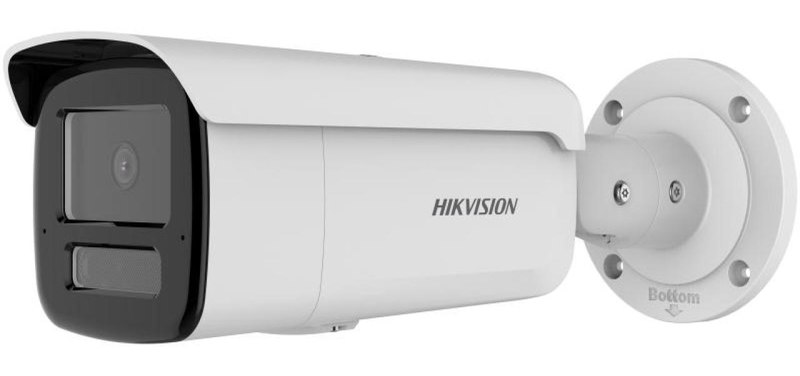

كل المنتجات ← كاميرات وأجهزة هيكفيجن
الموديل: DS-2CD2T83G2-2LI

| الماركة | هيكفيجن |
|---|---|
| الموديل | DS-2CD2T83G2-2LI |
| نوع المنتج | كاميرا بوليت خارجية IP |
| الكاميرا | |
| حساس الصورة | 1/2.8" Progressive Scan CMOS |
| أقصى دقة | 3840 × 2160 |
| أدنى إضاءة | Color: 0.005 Lux @ (F1.6, AGC ON),0 Lux with light |
| سرعة الغالق | 1/3 s to 1/100,000 s |
| ليلي/نهاري | IR cut filter |
| ضبط الزاوية | Pan: 0° to 360°,tilt: 0° to 90°,rotate: 0° to 360° |
| العدسة | |
| Lens Type | Fixed focal lens, 2.8, 4, and 6 mm optional |
| Focal Length & FOV | 2.8 mm, horizontal FOV 108°, vertical FOV 59°, diagonal FOV 127° 4 mm, horizontal FOV 88°, vertical FOV 44°, diagonal FOV 105° 6 mm, horizontal FOV 54°, vertical FOV 29°, diagonal FOV 63° |
| تركيب العدسة | M12 |
| Iris Type | Fixed |
| Aperture | F1.6 |
| Depth of Field | 2.8 mm: 1.7 m to ∞ 4 mm: 2.6 m to ∞ 6 mm: 5.8 m to ∞ |
| Pixel Density | |
| DORI | 2.8 mm, D: 84 m, O: 33 m, R: 16 m, I: 8 m 4 mm, D: 117 m, O: 46 m, R: 23 m, I: 11 m 6 mm, D: 176 m, O: 70 m, R: 35 m, I: 17 m |
| الإضاءة | |
| Supplement Light Type | IR,White Light |
| Supplement Light Range | -2LI and -2LI2U models: up to 60 m -4LI and -4LI2U models up to 80 m |
| Smart Supplement Light | Yes |
| IR Wavelength | 850 nm |
| الفيديو | |
| Main Stream | 50 Hz: 20 fps (3840 × 2160) 25 fps (3200 × 1800, 2688 × 1520, 1920 × 1080, 1280 × 720) 60 Hz: 20 fps (3840 × 2160) 30 fps (3200 × 1800, 2688 × 1520, 1920 × 1080, 1280 × 720) |
| Sub-Stream | 50 Hz: 25 fps (1280 × 720, 640 × 480, 640 × 360) 60 Hz: 30 fps (1280 × 720, 640 × 480, 640 × 360) |
| Third Stream | 50 Hz: 10 fps (1920 × 1080, 1280 × 720, 640 × 480, 640 × 360) 60 Hz: 10 fps (1920 × 1080, 1280 × 720, 640 × 480, 640 × 360) *Third stream is supported under certain settings. |
| Video Compression | Main stream: H.265/H.264/H.264+/H.265+, Sub-stream: H.265/H.264/MJPEG, Third stream: H.265/H.264, *Third stream is supported under certain settings. |
| Video Bit Rate | 32 Kbps to 16 Mbps |
| H.264 Type | Baseline Profile,Main Profile,High Profile |
| H.265 Type | Main Profile |
| Scalable Video Coding (SVC) | H.264 and H.265 encoding |
| Bit Rate Control | CBR,VBR |
| Region of Interest (ROI) | 1 fixed region for main stream and sub-stream |
| Target Cropping | Yes |
| الصوت | |
| Audio Compression | -2LI2U and -4LI2U models: G.711/G.722.1/G.726/MP2L2/PCM/MP3/AAC-LC |
| Audio Bit Rate | -2LI2U and -4LI2U models: 64 Kbps (G.711ulaw/G.711alaw)/16 Kbps (G.722.1)/16 Kbps (G.726)/32 to 160 Kbps (MP2L2)/8 to 320 Kbps (MP3)/16 to 64 Kbps (AAC-LC) |
| Audio Sampling Rate | -2LI2U and -4LI2U models: 8 kHz/16 kHz/32 kHz/48 kHz |
| Environment Noise Filtering | -2LI2U and -4LI2U models: Yes |
| الشبكة | |
| Protocols | TCP/IP, ICMP, HTTP, HTTPS, FTP, DHCP, DNS, DDNS, RTP, RTSP, RTCP, NTP, UPnP, SMTP, IGMP, 802.1X, QoS, IPv4, IPv6, UDP, Bonjour, SSL/TLS, PPPoE, SNMP, WebSocket, WebSockets |
| Simultaneous Live View | Up to 6 channels |
| API | ONVIF (Profile S, Profile G),ISAPI,SDK,ISUP |
| Security | Password protection, complicated password, HTTPS encryption, IP address filter, Security Audit Log, basic and digest authentication for HTTP/HTTPS, TLS 1.1/1.2/1.3, WSSE and digest authentication for Open Network Video Interface |
| User/Host | Up to 32 users 3 user levels: administrator, operator, and user |
| Client | iVMS-4200,Hik-Connect,Hik-Central |
| Network Storage | NAS (NFS, SMB/CIFS),Auto Network Replenishment (ANR), Together with high-end Hikvision memory card, memory card encryption and health detection are supported. |
| Web Browser | Plug-in required live view: IE 11, Plug-in free live view: Chrome 80+, Firefox 80+, Edge 89+, Safari 13+, Local service: Chrome 80+, Firefox 80+, Edge 89+, Safari 13+ |
| الصورة | |
| Image Parameters Switch | Yes |
| Day/Night Switch | Day,Night,Auto,Schedule |
| Image Settings | Rotate mode |
| Wide Dynamic Range (WDR) | 120 dB |
| SNR | ≥ 52 dB |
| Image Enhancement | BLC,HLC,3D DNR |
| Privacy Mask | 8 programmable polygon privacy masks |
| الواجهات | |
| Ethernet Interface | 1 RJ45 10 M/100 M self-adaptive Ethernet port |
| On-Board Storage | Built-in memory card slot, support microSD/microSDHC/microSDXC card, up to 512 GB |
| Reset Key | Yes |
| الصوت | Built-in Microphone: -2U: Arrayed dual-microphone |
| الأحداث | |
| Basic Event | Motion detection (support alarm triggering by specified target types (human and vehicle)),video tampering alarm,exception |
| Smart Event | Face detection |
| Linkage | Upload to FTP/NAS/memory card,notify surveillance center,send email,trigger recording,trigger capture |
| وظائف التعلم العميق | |
| Perimeter Protection | Line crossing, intrusion Support alarm triggering by specified target types (human and vehicle) |
| عام | |
| Power | -2LI and -2LI2U models: 12 VDC ± 25%, 0.66 A, max. 8.0 W, Ø5.5 mm coaxial power plug, reverse polarity protection, PoE: IEEE 802.3af, Class 3, max. 9.5 W -4LI and -4LI2U models: 12 VDC ± 25%, 0.87 A, max. 10.5 W, Ø5.5 mm coaxial power plug, reverse polarity protection, PoE: IEEE 802.3af, Class 3, max.12 W |
| الخامة | Metal |
| الأبعاد | 88.7 mm × 93.1 mm × 286.7 mm (3.5" × 3.7" × 11.3") |
| Package Dimension | 386 mm × 156 mm × 155 mm (15.2" × 6.1" × 6.1") |
| With Package Weight | Approx. 1660 g (3.7 lb.) |
| Storage Conditions | -30 °C to 60 °C (-22 °F to 140 °F). Humidity 95% or less (non-condensing) |
| Startup and Operating Conditions | -30 °C to 60 °C (-22 °F to 140 °F). Humidity 95% or less (non-condensing) |
| Language | 33 languages: English, Russian, Estonian, Bulgarian, Hungarian, Greek, German, Italian, Czech, Slovak, French, Polish, Dutch, Portuguese, Spanish, Romanian, Danish, Swedish, Norwegian, Finnish, Croatian, Slovenian, Serbian, Turkish, Korean, Traditional Chinese, Thai, Vietnamese, Japanese, Latvian, Lithuanian, Portuguese (Brazil), Ukrainian |
| General Function | Heartbeat,mirror,flash log,password reset via email,pixel counter,anti-banding |
| الاعتمادات | |
| EMC | CE-EMC: EN 55032:2015+A1:2020, EN 50130-4:2011+A1:2014, EN IEC 61000-3-2:2019+A1:2021, EN 61000-3-3:2013+A1:2019+A2:2021, RCM: AS/NZS CISPR 32: 2015, IC: ICES-003: Issue 7, KC: KN32: 2015, KN35: 2015 |
| Safety | CB: IEC 62368-1: 2014+A11, CE-LVD: EN 62368-1: 2014/A11: 2017, BIS: IS 13252 (Part 1): 2010/IEC 60950-1: 2005, LOA: IEC/EN 60950-1 |
| Environment | CE-RoHS: 2011/65/EU, WEEE: 2012/19/EU, Reach: Regulation (EC) No 1907/2006 |
| Protection | IP67: IEC 60529-2013 |